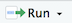
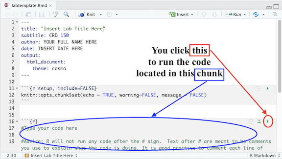
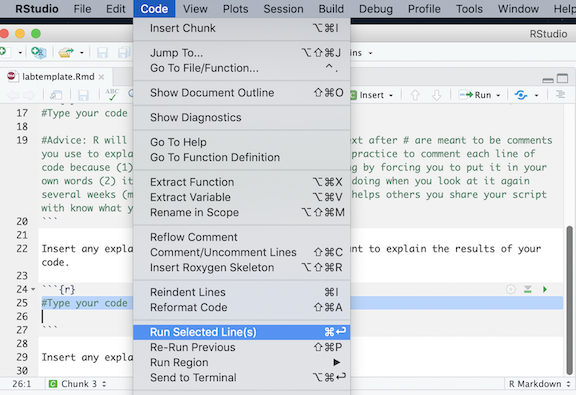

Assignment Guidelines
GEO 200CN - Quantitative Geography
Assignments are released Monday morning as pdfs on Canvas in the Files -> Labs and Assignments folder. They will be typically due the following Monday morning. Assignments will typically have two components:
- Answering non R-related conceptual questions.
- Executing data analysis tasks in R - for example, create a map or run a statistical model and interpret its results.
You will use R Markdown to write up all assignments, including the non-R related questions.
R Scripts
Running R code using the console is a great place to start, but has its limitations. Each time you want to execute a set of commands, you have to re-enter them at the command line. Complex commands are potentially subject to typographical errors, necessitating that they be re-entered correctly. Repeating a set of operations requires re-entering the code stream. To give yourself more room to work, it’s a great idea to use the R script editor.
A script is simply a text file containing a set of commands and comments. The script can be saved and used later to re-execute the saved commands. The script can also be edited so you can execute a modified version of the commands.
You can open a new empty script by clicking the New File icon in the upper left of the main RStudio toolbar. This icon looks like a white square with a white plus sign in a green circle. Clicking the icon opens the New File Menu. Click the R Script menu option and the script editor will open with an empty script. Your R Studio should look similar to below (image source: R for Data Science)

The panel that pops up is the mystery fourth window I was referring to in the Getting Started guide. Once the new script opens in the Script Editor panel, the script is ready for text entry.
R Scripts are basically text files with a .R extension that houses your code and comments. You write your code. Execute that code from your R script. Results are produced in your R console window. In this class, we won’t be using regular R Scripts for homework assignments. Instead, we’ll be using R Markdown.
R Markdown documents take script files to a new level by allowing you to mix R commands with explanatory text. Think of an R Markdown document as an R script on steroids. Your R Markdown source document is compiled into an output report evaluating the R commands in the source document to produce easily reproducible results in an aesthetically pleasing form. It combines code, results from the code, and narrative text explaining the results to produce beautiful documents and academic reports.
R Markdown
R Markdown is a simple formatting syntax for authoring html, pdf, and Microsoft Word documents in RStudio. For each R related assignment, you will upload onto Canvas two documents:
- An R Markdown document, which has an
.Rmdextension - A knitted
.html,.pdfor.docxfile
These documents will provide us an easy-to-read document to grade; more importantly, you will get to practice (1) writing scripts, (2) keeping track of the analyses you run, and (3) organizing your output in a reader-friendly manner. When you submit these documents on Canvas, do not combine them into a zipped compressed folder. They should be two separate files.
To be clear, R is a programming language. RStudio is an application. R Markdown is a markup syntax to convert R script and text into a pdf or html document. It allows for presentation-ready documents that show commands and results in a seamless flow. When you write R code and embed it in presentation documents created using R Markdown, you are forced to explicitly state the steps you took to do your research.
In RStudio, install the packages knitr and rmarkdown using the install.packages() command. Type the following in your RConsole window after >
install.packages("knitr")
install.packages("rmarkdown")Once you’ve installed these packages, you don’t need to install them any more in the future. You also do not need to load them in at any time using library().
Creating and saving an R Markdown document
To create a new .Rmd file in RStudio, select File -> New File -> R Markdown. A window should pop up. Type in “Assignment 1” next to Title and your name next to Author. Leave everything else alone and click OK. A new window in the top left of your RStudio console should pop up containing your new R Markdown file.

The full RStudio interface
If you are using your personal computer for this guide, it’s best to set up a clean and efficient file management structure. File management is key to preventing R programming frustration. Here are some tips.
- Set up a clear and understandable hierarchical file system for this class on your hard drive. For example, create a class folder (GEO 200CN). Within this class folder, create the folder Assignments. Within the Assignments folder, create separate folders for each Assignment (e.g. Assignment 1, Assignment 2, …). Don’t work from your Desktop. Or from the Downloads folder. Or some randomly named folder that you will have a hard time finding a month, week or day from now. You might end having a system that looks like the following (on a Mac)
- Keep all your files that are related to a lab or assignment in one folder. That is, don’t have an Assignment 3 folder that contains data files specific to Assignment 1. Keep everything in one folder, including the R Markdown for that assignment or lab.
Using the basic guidelines above, save your R Markdown file into an appropriate folder on your hard drive by clicking on File and then Save from the RStudio menu.
Authoring an R Markdown document
R Markdown documents contain 3 major components:
- A YAML header surrounded by - - -
- Chunks of R code surrounded by ```
- Text mixed with simple text formatting using the Markdown syntax
YAML header
The YAML header controls how R Markdown renders your .Rmd file. A YAML header is a section of key:value pairs surrounded by - - - marks and is **always located at the top of your Rmd file*.
In the assignment’s YAML, add your name, assignment number, and the date. These are the only necessary items, but you can change other options, most of which are detailed here. Your YAML will generally look like the following.
---
title: "Assignment [insert number here]"
subtitle: "GEO 200CN""
author: Your full name here
date: Assignment due date
output: html_document
---R Code chunks
After the YAML, you will start answering the assignment questions. When answering an R-related assignment question, you’ll have the following sequence of components in your R Markdown document: Question, R code answering the question, and your text to explain the results. Let’s say you have the following question in one of your assignments.
Question 1
1+1
1. What does the above code do?
Assignments will ask you to write R code to accomplish a data analysis task. You present and execute your R code inside R code chunks. R chunks start with ```{r} and end with ```, and you insert your R code in between. To designate 1+1 as R code, it will look like the following in your R Markdown document.
```{r}
1+1
```All code inside a chunk will be executed when knitting the markdown file (i.e. the html file will show your code and its result). This means that your R code must reside inside an R code chunk in order for it to be processed as R code (otherwise R Markdown will think it is text). This also means that nothing but executable code (or comments, which we’ll get to next) should be inside a chunk.
We will ask you to annotate your R code so that we (and you) know what is being done in that line of code. You designate annotations or comments in R code using the # symbol. So, to annotate the above line of code 1+1, you add in your R code chunk
```{r}
#this yields two
1+1
```You put your comments after the #.
The first line of the chunk has {r} which basically states that everything inside the chunk will be in R code. Next to the r, we can give the chunk a name, such as
```{r q1chunk1}
#this yields two
1+1
```Here, I named the chunk q1chunk1 which indicates this is question 1, chunk 1. You can name the chunk whatever you like (sally, clare, stevewheeler). The chunk name is not required; however, it is good practice to give each chunk a unique name (we’ll see its value later when we talk about knitting).
In the R Markdown you created and saved, you will notice the following R code chunk after the YAML.
```{r}
knitr::opts_chunk$set(echo = TRUE)
```The above code establishes global options for every R chunk code in your R Markdown file. These options alter the way R results are spit out in your formatted knitted document. I suggest adding the following global options in every R Markdown assignment file.
```{r}
knitr::opts_chunk$set(warning=FALSE, message = FALSE)
```The above code hides non error messages for every single R code chunk in your file. These non error messages are unnecessary for the purposes of this class. Other chunk options can be found here.
You can also set options for individual chunks. These are local options - local to that chunk - and won’t be applied to other chunks in your file. For example, you can add the options warning=TRUE and message=TRUE to an individual R code chunk as follows to show the messages for the R code in that chunk. Notice that each argument is separated by a comma.
```{r q1chunk1, warning = TRUE, message = TRUE}
1+1
```Text
In addition to R code, assignments will ask you to write text to explain results. Going back to our example question from above
Question 1
1+1
1. What does the above code do?
You would type in your R Markdown document the following
Question 1
```{r q1chunk1}
#this yields two
1+1
```
The code adds one plus one
The question and text explaining the result reside outside of the R chunk. There is nothing special about the text in terms of its format or placement.
Separating code one chunk at a time
Do not put all of your code for an entire assignment or even a single question in one single chunk. For example, let’s say you see the following in your homework assignment.
Question 1
1+1
2+2
Run each line of code above. What are the results?Instead of including both lines of code in one chunk like as follows
Question 1
```{r q1chunk1}
#this code adds one plus one
1+1
#this code adds two plus two
2+2
```
One plus one equals 2. Two plus two equals 4.Break it up and add text after each to explain the result.
Question 1
```{r q1chunk1}
#this code adds one plus one
1+1
```
One plus one equals 2.
```{r q1chunk2}
#this code adds two plus two
2+2
```
Two plus two equals four.Think of writing a script as similar to writing an essay. You don’t write an essay in one single paragraph. You break it up into several paragraphs, where paragraph breaks are used to separate major points and ideas. On the other end of the spectrum, do not break up every single line of code like you would not break up every single sentence in an essay. Break up your code where it makes sense.
Always test each chunk
After you write code in a chunk, you’ll need to test the code to make sure it is running properly. In other words, rather than writing all the code and then running it at the end of the assignment, run the chunks one at a time. To elaborate, let’s say the first question in an assignment asks you to add one plus one. In your R Markdown document, type in the following to answer this question.
Question 1
```{r q1chunk1}
#this yields two
1+1
```
The code adds one plus one.Run that code chunk to make sure it works (you should get 2!). Then proceed to the next question. Let me emphasize: Do not write all of your code answering every question in the assignment and run it at the very end. Routinely TEST, Test, and test your code to make sure it runs properly.
There are a number of ways to run code in R Markdown. First, you can click your mouse in the R code chunk you want to run and click on  located at the top of the R Markdown window and select Run Current Chunk.
Second, you can place your mouse cursor in the R code chunk and click on  located on the right corner of the chunk. See Figure below.
located on the right corner of the chunk. See Figure below.

In each R chunk, pressing the button  will run all previous R chunks. See Figure below.
will run all previous R chunks. See Figure below.

Third, you can highlight partly or entirely a line of code and select Code from the R Studio menu and select (among many options) Run Selected Lines(s). See Figure below (from a Mac OS).

Fourth, you can highlight partly or entirely a line of code and use a keyboard shortcut to run the code. As you can see in the figure above, the keyboard shortcut to run code on a Mac is command + return. See here for other shortcuts for both Mac and Windows.
Note that when you first run an R code chunk for the very first time ever, its output will be embedded within your R Markdown document as shown below
Output within R Markdown document.
This will also be true when you plot graphs and maps. When you are testing your code, you might want to have the code results shown in your RStudio Console (the bottom left window) and plots/maps shown in the Plots window (bottom right window). To get RStudio to do this, select the “Tools” menu and select “Global Options”. Select “R Markdown” from the left-hand side and deselect the check box “Show output inline for all R Markdown documents”. The output from your code should now be shown in the console or Plots window.
R Markdown options.
Knitting an R Markdown document
In addition to the R Markdown Rmd file, you will need to submit its knitted result. Knitting puts an assignment’s main components - code, output, and text - in a nicely formatted document. You can create three types of knitted documents: html, Microsoft Word, and a pdf. I recommend knitting to an html file because it is the easiest of the three options. Go back to the YAML example I showed above. output: html_document tells R to produce an html document. If you want to knit to a pdf, you’ll need to do some extra package installing. See here.
To Knit your document click  , which will be located at the top of the upper left R Markdown window. Note that you can select your document type when knitting by clicking the pull down menu next to and selecting your document choice (default is html).
, which will be located at the top of the upper left R Markdown window. Note that you can select your document type when knitting by clicking the pull down menu next to and selecting your document choice (default is html).

When you start knitting, you will notice that a new window on the bottom left will appear in place of the console. The window will show the progress in your knitting. R is going through each R code chunk one at a time. The percentages you will see will be based on the proportion of your R Markdown file that R has successfully knitted. See Figure below.

R Markdown knitting progress window
If it has a problem knitting, R will stop at the chunk that contains the problem. You can determine the offending place in your R Markdown file two ways. First, in the R Markdown tab in the bottom left window, if you click on “Output” located at the top right corner of this window, you will see the R Markdown progress window, the error in red, and where R Markdown stopped. Carefully read the description of the error, which will contain the R code chunk name and sometimes the lines containing the problem in your R Markdown file. This is where it is useful for naming your chunks. You can go to your offending chunk and see what may be the problem. For example, the figure below shows knitting was stopped because the object xyz was not created in the R Markdown file. You can go to the chunk named q2chunk2 to remedy the issue.

R Markdown knitting stopped by an error
The other way to find where R Markdown is having trouble is by clicking on “Issues” also located at the top right corner of the R Markdown window. The error will give you something similar to what you found in the Output window, but instead of a chunk, it will tell you the specific line in your R Markdown file that this error is located. Go to that line in your R Markdown file and see what is the issue. For example the error is located in line 34.

R Markdown knitting stopped by an error
Hopefully, the error statement reveals why you were not able to knit. If it is not illuminating (oh oh), you’ll need to figure out what you did wrong. See the Having problems knitting? section below.
Note that when you are knitting, progress and any errors will be shown not in the regular R console window, but in a special R Markdown window. To toggle back to the Console (and back to the R Markdown window), just click on the Console (or R Markdown) tab as shown below.

If you encounter no errors, a preview of your knitted document will pop up in a new window and the .html (or pdf or docx) file will be saved in the folder where your Rmd file resides. I recommend not waiting till the very end of an assignment to knit. When you finish one question, knit your document to see if everything is working properly. If it is working for that question, move on to the next question.
Let’s be clear. There are two things you’ll have to deal with: (1) Making sure the R code is working correctly to get the results you need in order to answer the question (2) Making sure the code is working correctly to knit a final document. These two issues may be related (if your R code is producing an error, R Markdown will not knit), but sometimes they are not. So, check both your R code and your knitting results often. And absolutely do not wait till the last minute to knit. Knit as often as possible.
When you’re satisfied with the end product, submit your .Rmd document and a knitted document on Canvas.
Having problems knitting?
- A major source of error for most new R Markdown users is that they call up a data object in their R Markdown file that has not been created within the R Markdown file. Treat the R Markdown as its own separate system - even if you’ve created an object through the R Console, and you can see it sitting in your Environment window, R Markdown won’t recognize it because it was not created within the R Markdown document.
To be clear, let’s say you typed directly in the R console the following code:
myobject <- 2You see the object myobject pop up in your Environment window in the top right window. Let’s say you write in your R Markdown file the code:
```{r}
myobject*10
```You then click on to knit. You will get an error because R will not be able to knit because myobject was not created within the R Markdown. Both lines of code should be in the R Markdown file as follows:
```{r}
myobject <- 2
myobject*10
```Once again, treat the R Markdown file as a self-contained, stand alone script. This is an important concept to understand because many students get tripped up on it when first starting out.
- Are you trying to bring in a data file that is not located in the directory your R Markdown is pointed to? Remember, don’t scatter your data files for an assignment across different folders. Keep them in one folder - the folder where your R Markdown document resides. To find your current working directory, type in
getwd()in your console and press enter. To set your working directory, type insetwd("folder")in your R Markdown and replace “folder”” with the entire path you want R to point to. You can also set your working directory by clicking on Session -> Set Working Directory -> Choose Directory from the top menu. - Do you have an
install.packages()in your R Markdown script? Take it out! You only need to do it once - and never inside an R Markdown script. - Do you have a
View()command in your R Markdown script? Take it out! Sometimes R Markdown will have problems when trying to view an R data object. - Are you using functions for a package that you need to load into R and haven’t loaded it in your R Markdown using
library(). If so, load it in R Markdown! - If you change a piece of code somewhere in the middle because you caught an error, make sure that change is reflected throughout the code. For example, let’s say you decide to rename the object hisobject to herobject. There may be code later on in the document that uses hisobject. So, you’ll need to change every line of code in your R Markdown that uses hisobject to now use herobject.
- SPELLING, Spelling, spelling. Check your spelling. You created an object named hisobject, but you use it later in the file as hsobject. R will tell you that hsobject is not found. You use the function
read_cvs()as opposed to the correct functionread_csv().
- R is case sensitive. The object Money is different from money.
- R functions are sometimes finicky about spaces. They are also finicky about quotes. Some functions require quotes, others don’t.
- Make sure that when you use brackets, parentheses or quotes, they should start and end with one. It is very rare that you will use a left parentheses and not close it with a right parentheses.
- As I mentioned above, don’t wait till the last minute to knit. Knit after every question. Repeat it again: Knit after every question.
- The first place to check when you get a knitting error is the specific chunk or line that the error is pointing to.
- As I mentioned above, check if your R code works one chunk at a time.
- Having problem with a line of R code?
- Did you install the appropriate package?
- Did you load in the appropriate library?
- Are you using the right function?
- Did you specify all the function’s arguments correctly?
- Still having problems? Break up your code line by line or even argument by argument to find the error? For example, let’s say you have 4 lines of code that are connected together - i.e. line 4 depends on line 3, line 3 depends on line 2, and so on
line 1 code
line 2 code
line 3 code
line 4 codeIf you get an error, run line 1 first. No error? Run line 1 and 2. No error? Keep going until you find the offending line.
- If you have a Mac and you are getting an error when knitting, you may need to download the most recent version of XQuartz, which can be downloaded here
- If you’re still stuck, more than likely someone else also had a similar problem in the past. So, ask a classmate. If your classmate is also stuck, use Google and it might help you out.
Summary
The proper workflow for each assignment will be as follows
- Go through the week’s reading and lab guide and make sure you understand the material.
- Create a folder on your hard drive that is specific to the assignment (e.g. Assignment 1, Assignment 2, etc.).
- Create an R Markdown assignment file. Save it in the appropriate assignment folder on your hard drive.
- Download any data needed for the assignment into the same folder. For most assignments, I will upload the assignment data on GitHub, which you can directly link to in R, so you won’t have to download data. Some files will be located on Canvas.
- In the R Markdown document, answer the first assignment question.
- Most of the questions will ask you to run code. Show that code in R Markdown chunks. Bottom line: Any code you used to get a result should be in your assignment. Otherwise, you will get points off, and for some questions, get all points off.
- Break up your code into different chunks where it makes sense. For some questions, you might include all code for a question in one single chunk. For other questions, you might break up the code into several chunks.
- Make sure your code works. Run code one chunk at a time to make sure it is working. Note that there are multiple ways to get to an answer in R. We will not grade on how efficient your code is unless stated so in the question.
- Most of the questions will ask you to explain your results. Write your explanations outside of the R code chunks. Please - please - take these interpretation questions seriously. This is a not a programming or Data Science course - you may have taken 40 hours to produce super elegant code to answer a question, but your results won’t be worth much to anyone if you can’t properly interpret them.
- If you have non-R related questions in the assignment, answer them as text in your R Markdown.
- After you’ve completed the first question, knit to an html, pdf or docx file. Make sure it knits properly. If it does not, examine the error, and fix the problem.
- If you’re satisfied with your code and its results for the first question, and the document properly knitted, move on to the next question. Repeat steps 5 and 6.
- Once you’ve completed all questions and successfully knitted, submit the
.Rmdand the knitted files on Canvas before the designated due time. - Smile, pat yourself on the back, and have some ice cream (I like these folks).
Grading
In order to get full credit for R related questions, you will need to
- Show the correct statistical results for a given question (e.g. map, table, statistics).
- Show the code producing the results.
- Annotate your code by placing explanatory text after
#in an R chunk. These annotations will allow us to know that you know what the code is doing. - Provide correct written answers.
Any response requiring a data analysis task must be supported by code you generate to produce your result. Just examining your various objects in the “Environment” section of R Studio is insufficient—you must use scripted commands. Because there are typically multiple ways to get an answer, we will not grade you on the efficiency of your code. You can ask for help from the TA and work with other students. However, you must submit your own assignments.
We will be lenient in our grading early in the quarter as you learn R. However, grading will get progressively stringent, particularly on aspects of your submission that we’ve already covered in a prior week.
Also note: all code used to produce your results must be shown in your html or pdf file (e.g., do not use echo=FALSE or include=FALSE as options anywhere). Other pieces of advice
- Answers should be correct. This is not to say that we will not take into consideration how much of your code is correct. But, if you do get the wrong answer we will take at least something off.
- We will not grade on how efficient your code is unless stated so in the question. We will never take points off for accomplishing things differently than expected as long as it produces the correct result. However, if the answer is incorrect and your code indicates little effort (e.g. blank or a few lines of code that yield nothing) or is completely incomprehensible (e.g. 20 lines of mish mash), expect few to no points.
- Interpretation of results is very important. This is not a programming class. You might have the fanciest code in the world, but it will not matter much if you do not understand what the results are telling you.
- You must submit both an Rmd and knitted file. If you don’t, we will take significant points off.
Other things to know
- Please spell-check your assignment before handing it in (Edit -> Check Spelling from the top menu bar).
- The default editor settings are to insert matching parentheses and quotes; if you find that this intrudes on your workflow, you can disable it via Tools -> Global Options -> Code then uncheck Insert matching parens/quotes.
- We expect you to work together. Two heads are better than one, and five heads are better than two
- We expect you to ask for help if you get stuck (and you will be stuck a lot). We can’t read minds, so if you don’t tell us that you are confused, we won’t know.
- You should try and solve problems before you ask for help.
- Trying includes an Internet search (a crucial skill!)
- All homework should be submitted on Canvas.
Getting R Markdown Help
Whenever you are editing R Markdown documents in RStudio, you can display an R Markdown cheat sheet by going to Help -> Cheatsheets -> R Markdown Cheat Sheet. A basic introduction to R Markdown can also be found in Chapter 21 in R for Data Science. R Studio has a quick introduction to R Markdown. We’ve put together some additional R tips here in the likely case that you get stuck. And, of course, there is the Google machine. Use it to get help.

This work is licensed under a Creative Commons Attribution-NonCommercial 4.0 International License.
Website created and maintained by Noli Brazil